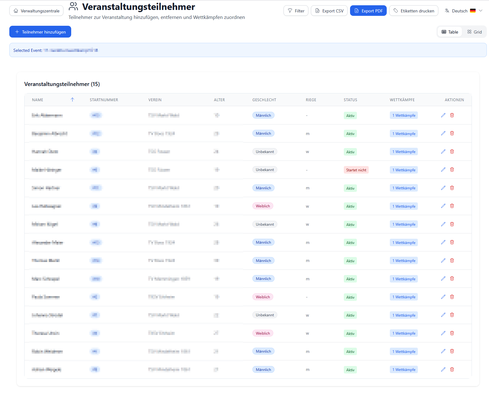
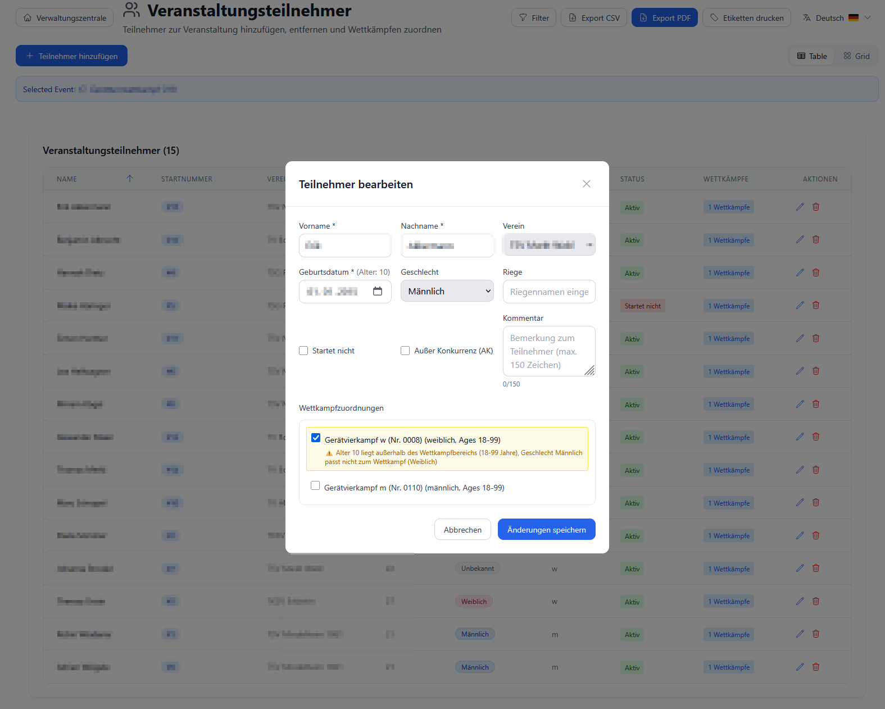
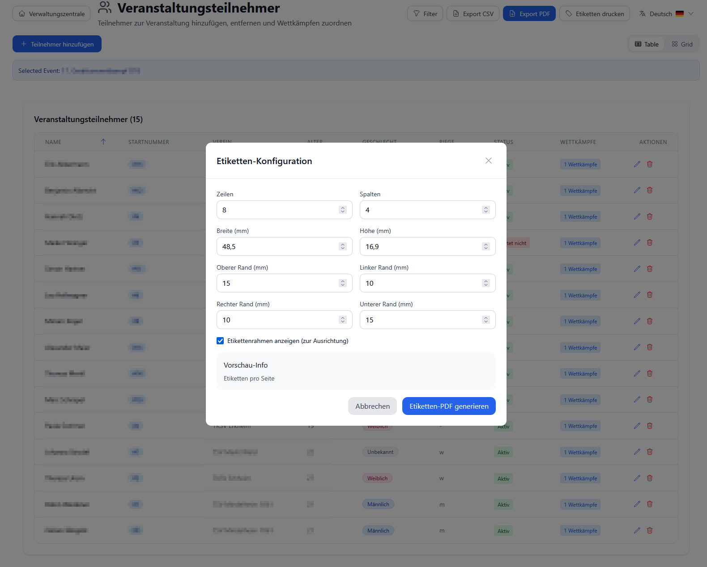

Teilnehmer verwalten¶
Zielgruppe: Event-Manager, Wettkampfleiter, Vereins-Administratoren
Schwierigkeit: ⭐ Einfach
Zeitaufwand: 2-5 Minuten pro Teilnehmer, Massen-Import: 5 Minuten
📋 Übersicht¶
Die Teilnehmer-Verwaltung ist das Herzstück der Wettkampf-Organisation. Hier verwalten Sie:
- ✅ Athleten erfassen - Persönliche Daten, Verein, Geburtsdatum
- ✅ Startnummern vergeben - Automatisch oder manuell
- ✅ Wettkämpfen zuordnen - Teilnehmer zu Wettkämpfen hinzufügen
- ✅ Labels drucken - Startnummern-Aufkleber
- ✅ Massen-Import - GymNet XML oder CSV
- ✅ Daten exportieren - CSV für weitere Verarbeitung
Wichtig: - Athleten = Personen-Stammdaten (wiederverwendbar) - Teilnehmer = Athleten + Wettkampf-Zuordnung + Startnummer
🎯 Kernkonzepte¶
1. Athlet vs. Teilnehmer¶
Athlet (Person): - Stammdaten: Name, Geburtsdatum, Geschlecht, Verein - Wiederverwendbar: Kann an mehreren Events teilnehmen - Langfristig: Bleibt in Datenbank gespeichert
Teilnehmer (Event-spezifisch): - Athlet + Event: Verknüpfung Athlet ↔ Wettkampf - Startnummer: Nur für diesen Wettkampf gültig - Temporär: Nur für aktuelles Event relevant
Beispiel:
Athlet "Max Müller" (TV Musterhausen, *2012)
├─ Teilnehmer Bezirksmeisterschaften 2025 (Startnr. 15)
├─ Teilnehmer Landesmeisterschaften 2025 (Startnr. 42)
└─ Teilnehmer Vereinsmeisterschaften 2025 (Startnr. 3)
2. Altersberechnung¶
Automatisch berechnet aus Geburtsdatum: - Wettkampfjahr: Jahr des Events - Stichtag: Meist 31.12. des Wettkampfjahres (konfigurierbar)
Beispiel:
Geburtsdatum: 15.06.2012
Wettkampf: 05.11.2025
→ Alter: 13 Jahre (2025 - 2012)
→ Altersklasse: AK 12-13 ✓
Code-Hintergrund:
// Altersberechnung
const calculateAge = (birthdate: string, competitionDate: string): number => {
const birth = new Date(birthdate);
const competition = new Date(competitionDate);
let age = competition.getFullYear() - birth.getFullYear();
// Korrektur falls Geburtstag im Wettkampfjahr noch nicht war
const monthDiff = competition.getMonth() - birth.getMonth();
if (monthDiff < 0 || (monthDiff === 0 && competition.getDate() < birth.getDate())) {
age--;
}
return age;
};
3. Geschlecht-System¶
Drei Werte (für Wettkampf-Zuordnung):
| Wert | Datenbank | Anzeige | Farbe |
|---|---|---|---|
| 1 | int_geschlecht = 1 |
🔵 Männlich | Blau |
| 2 | int_geschlecht = 2 |
🔴 Weiblich | Rosa |
| 3 | int_geschlecht = 3 |
🟣 Divers | Lila |
Automatische Validierung: - System prüft bei Wettkampf-Zuordnung - Männlich → nur Männer-Wettkämpfe - Weiblich → nur Frauen-Wettkämpfe - Gemischte Wettkämpfe → alle Geschlechter
4. Startnummern-System¶
Zwei Varianten:
A) Automatische Generierung (empfohlen): - System vergibt fortlaufende Nummern - Sortierung nach: Wettkampf, Geschlecht, Name - Beispiel: 1, 2, 3, 4, ...
B) Manuelle Vergabe: - Sie tragen Startnummer ein - Flexibel für spezielle Fälle - Duplikate werden geprüft
Code-Referenz:
// Automatische Startnummern-Generierung (API)
PUT /api/events/{eventId}/generate-start-numbers
// Logik:
// 1. Alle Teilnehmer des Events laden
// 2. Sortieren nach: Wettkampf, Geschlecht, Nachname
// 3. Fortlaufende Nummern vergeben (1, 2, 3, ...)
// 4. In Datenbank schreiben (tfx_teilnehmer.int_startpassnummer)
✅ Voraussetzungen¶
- ✅ Stammdaten angelegt:
- Vereine
-
✅ Event erstellt - Siehe Wettkämpfe verwalten
-
✅ Wettkämpfe angelegt - Mit Altersgruppen und Geschlecht
{kind=link}
{kind=link}
Optional: - 📄 Excel-Liste mit Athleten (für Massen-Import) - 🏷️ Etiketten-Drucker (für Startnummern-Labels)
🚀 Schritt 1: Teilnehmer-Übersicht¶
1.1 Übersicht öffnen¶

Navigation: Hauptmenü → "Teilnehmer"
Übersicht zeigt: - Alle Teilnehmer aller Events - Smart Pagination: Automatisches Laden bei Scrollen - Filter: Verein, Geschlecht, Alter - Suche: Name, Startnummer
1.2 Ansichten¶
Drei Ansicht-Modi:
| Modus | Symbol | Verwendung |
|---|---|---|
| Tabelle | 📋 | Standard, alle Details auf einen Blick |
| Karten | 🎴 | Übersichtlich mit Foto-Platzhaltern |
| Grid | 🔲 | Kompakte Kachel-Ansicht |
Umschalten: Buttons oben rechts
1.3 Tabellen-Spalten¶
| Spalte | Inhalt | Sortierbar |
|---|---|---|
| Startnr. | Startnummer | ✅ |
| Name | Nachname, Vorname | ✅ |
| Verein | Vereins-Name (Badge) | ✅ |
| Geschlecht | 🔵 M / 🔴 W | ✅ |
| Alter | Berechnetes Alter | ✅ |
| Geburtsdatum | Datum (optional ausgeblendet) | ✅ |
| Aktionen | Bearbeiten, Löschen | ❌ |
💡 Tipp: Klicken Sie auf Spalten-Überschrift zum Sortieren
👤 Schritt 2: Teilnehmer hinzufügen¶
2.1 Neuen Teilnehmer erstellen¶
Button: "+ Neuer Teilnehmer" (oben rechts)

Formular öffnet sich
2.2 Pflichtfelder ausfüllen¶
| Feld | Beschreibung | Beispiel | Pflicht |
|---|---|---|---|
| Nachname | Familienname | Müller | ✅ |
| Vorname | Rufname | Max | ✅ |
| Geburtsdatum | Datum (TT.MM.JJJJ) | 15.06.2012 | ✅ |
| Geschlecht | Männlich/Weiblich/Divers | Männlich | ✅ |
| Verein | Dropdown-Auswahl | TV Musterhausen | ✅ |
| Startnummer | Manuell oder leer (später generieren) | 15 | ❌ |
Geschlecht-Auswahl: - ⚪ Männlich - ⚪ Weiblich - ⚪ Divers
Verein-Auswahl: - Dropdown mit allen Vereinen - Falls Verein fehlt: Verein anlegen
2.3 Startnummer¶
Option A: Leer lassen (empfohlen) - Später automatisch generieren - System vergibt fortlaufend
Option B: Manuell eingeben - Zahl zwischen 1-9999 - System prüft auf Duplikate - Warnung bei Überschneidung
💡 Tipp: Startnummern erst generieren wenn alle Teilnehmer erfasst sind
2.4 Speichern¶
Button: "Speichern"
System: 1. Validiert Eingaben 2. Berechnet Alter 3. Speichert in Datenbank 4. Aktualisiert Liste
Fehler-Meldungen: - ❌ "Nachname erforderlich" - ❌ "Geburtsdatum ungültig" - ❌ "Startnummer bereits vergeben"
📝 Schritt 3: Teilnehmer bearbeiten¶
3.1 Teilnehmer auswählen¶
Klicken Sie auf: Bearbeiten-Symbol (✏️) in der Zeile
Formular öffnet sich mit vorausgefüllten Daten
3.2 Daten ändern¶
Änderbar: - ✅ Name (Nachname, Vorname) - ✅ Geburtsdatum - ✅ Geschlecht (Achtung: Wettkampf-Zuordnung prüfen!) - ✅ Verein - ✅ Startnummer
Nicht änderbar: - ❌ Teilnehmer-ID (interne Nummer)
3.3 Geschlecht ändern - Warnung!¶
Problem: Wettkampf-Zuordnung kann ungültig werden
Beispiel:
Teilnehmer: Max Müller (Männlich)
Zugeordnet zu: "Männlich AK 12-13"
Änderung auf: Weiblich
→ Wettkampf-Zuordnung ungültig!
→ Teilnehmer wird aus Wettkampf entfernt (automatisch)
Lösung: 1. Prüfen Sie vor Änderung: Hat Teilnehmer Wettkämpfe? 2. Nach Änderung: Neu zu passenden Wettkämpfen zuordnen
3.4 Speichern¶
Button: "Speichern"
System aktualisiert: - Teilnehmer-Daten - Alter (neu berechnet) - Wettkampf-Zuordnungen (Validierung)
🗑️ Schritt 4: Teilnehmer löschen¶
4.1 Löschen-Button¶
Klicken Sie auf: Löschen-Symbol (🗑️)
Bestätigungs-Dialog:
Möchten Sie diesen Teilnehmer wirklich löschen?
Teilnehmer: Max Müller (TV Musterhausen)
Startnummer: 15
Diese Aktion kann nicht rückgängig gemacht werden.
[Abbrechen] [Löschen]
4.2 Was wird gelöscht?¶
Entfernt: - ✅ Teilnehmer-Datensatz - ✅ Wettkampf-Zuordnungen - ✅ Startnummer
Behalten: - ✅ Athlet-Stammdaten (falls Option "Athlet behalten" aktiviert) - ✅ Wertungen (als "gelöschter Teilnehmer" markiert)
💡 Hinweis: Wertungen bleiben für Archiv-Zwecke erhalten
4.3 Vorsicht!¶
Nicht löschen wenn: - ❌ Wettkampf bereits gestartet - ❌ Wertungen vorhanden - ❌ Urkunden gedruckt
Besser: Teilnehmer als "inaktiv" markieren (zukünftiges Feature)
🔢 Schritt 5: Startnummern generieren¶
5.1 Event Management öffnen¶
Navigation: 1. Events → Ihr Event auswählen 2. Event Management öffnen
5.2 Startnummern generieren¶
Button: "Startnummern generieren" (im Header)
System-Workflow: 1. Lädt alle Teilnehmer des Events 2. Sortiert nach: - Wettkampf (alphabetisch) - Geschlecht (männlich vor weiblich) - Nachname (A-Z) 3. Vergibt fortlaufende Nummern (1, 2, 3, ...) 4. Speichert in Datenbank
Bestätigungs-Dialog:
Startnummern für 87 Teilnehmer generieren?
Bestehende Startnummern werden überschrieben!
[Abbrechen] [Generieren]
Ergebnis:
💡 Tipp: Generieren Sie neu, wenn Sie Teilnehmer nachgetragen haben
🏷️ Schritt 6: Startnummern-Labels drucken¶
6.1 Label-Ansicht öffnen¶

Tab: "Labels" (in Teilnehmer-Übersicht)
6.2 Layout wählen¶
Vorlagen: - Avery 5160 (30 Labels pro Seite, 2.5x1 inch) - Avery L7160 (21 Labels pro Seite, 63.5x38.1 mm) - Herma 4453 (40 Labels pro Seite) - Benutzerdefiniert (eigene Maße eingeben)
6.3 Inhalt konfigurieren¶
Felder pro Label: - ☑️ Startnummer (groß, fett) - ☑️ Name (Teilnehmer) - ☑️ Verein (klein) - ☑️ Wettkampf (optional)
Beispiel-Label:
┌──────────────────┐
│ 15 │ ← Startnummer (36pt)
│ Max Müller │ ← Name (12pt)
│ TV Musterhausen │ ← Verein (10pt)
└──────────────────┘
6.4 PDF generieren¶
Button: "Labels drucken"
System:
1. Generiert PDF mit allen Labels
2. Automatischer Download
3. Dateiname: Startnummern_Labels_[Event]_[Datum].pdf
6.5 Drucken¶
Drucker-Einstellungen: - Papier: A4 Etiketten-Bogen (passend zur Vorlage) - Randlos: Aus (Etiketten haben eigene Ränder) - Skalierung: 100% (keine Auto-Anpassung!)
Test-Druck: 1. Drucken Sie auf normalem Papier 2. Legen Sie Etiketten-Bogen drauf (gegen Licht halten) 3. Prüfen Sie Passgenauigkeit 4. Falls Versatz: Position in Vorlage anpassen
📥 Schritt 7: Massen-Import¶
7.1 GymNet XML Import¶
Datei-Format: GymNet-Export (XML)
Navigation: Events → "Importieren" (Button)
Upload: 1. XML-Datei auswählen 2. System analysiert Datei 3. Vorschau der zu importierenden Daten
Mapping (automatisch):
<Person>
<perNachname> → var_nachname
<perVorname> → var_vorname
<perGeburtstag> → dat_geburtstag
<perGeschlecht>1</perGeschlecht> → int_geschlecht (1=männlich, 2=weiblich)
<perVerein> → Verein-Zuordnung
<perStartnummer> → int_startpassnummer
</Person>
Import starten: "Importieren" Button
Fortschritt:
Importiere Teilnehmer... 45/150 (30%)
[████████░░░░░░░░░░░░░░░░░░]
✅ 142 Teilnehmer erfolgreich importiert
⚠️ 5 Duplikate übersprungen
❌ 3 Fehler (ungültige Daten)
Siehe: GymNet Import Guide
7.2 CSV Import¶
Datei-Format: Excel → CSV Export
CSV-Struktur:
Nachname,Vorname,Geburtsdatum,Geschlecht,Verein,Startnummer
Müller,Max,2012-06-15,1,TV Musterhausen,15
Schmidt,Anna,2013-03-22,2,TV Musterstadt,16
Felder: - Geschlecht: 1=männlich, 2=weiblich, 3=divers - Geburtsdatum: YYYY-MM-DD (ISO-Format) - Verein: Exakter Name (muss existieren!)
Import: 1. CSV hochladen 2. Spalten-Mapping prüfen 3. Importieren
Fehlerbehandlung: - Zeile mit Fehler wird übersprungen - Fehler-Log zeigt Problem - Valide Zeilen werden importiert
🔍 Schritt 8: Filtern & Suchen¶
8.1 Such-Feld¶
Eingabe: Name oder Startnummer
Beispiele: - "Müller" → Alle mit "Müller" im Namen - "15" → Startnummer 15 - "Max" → Alle mit "Max" im Vornamen
Live-Suche: Ergebnisse während Eingabe
8.2 Filter¶
Filter-Button (oben): Öffnet Filter-Panel
Verfügbare Filter:
| Filter | Optionen | Verwendung |
|---|---|---|
| Verein | Alle Vereine (Dropdown) | Nur ein Verein anzeigen |
| Geschlecht | Männlich / Weiblich / Divers | Nach Geschlecht filtern |
| Altersgruppe | 6-8, 9-11, 12-13, 14-15, 16+ | Nach AK filtern |
| Event | Alle Events (Dropdown) | Nur ein Event |
| Wettkampf | Wettkämpfe des Events | Teilnehmer eines Wettkampfs |
Kombinieren: Mehrere Filter gleichzeitig möglich
Beispiel:
Filter: Verein="TV Musterhausen" + Geschlecht="Männlich" + Alter="12-13"
→ Zeigt: Männliche Turner (12-13) vom TV Musterhausen
8.3 Filter zurücksetzen¶
Button: "Filter zurücksetzen" (X-Symbol)
Setzt alle Filter und Suche zurück → Alle Teilnehmer sichtbar
🎯 Tipps & Best Practices¶
✅ Do's¶
- Stammdaten zuerst
- Vereine vor Teilnehmern anlegen
- Regionen/Verbände konfigurieren
-
Dann Import starten
-
Massen-Import nutzen
- Für >10 Teilnehmer: GymNet XML oder CSV
- Fehleranfälliger als manuell, aber viel schneller
-
Test-Import mit 5 Teilnehmern zuerst
-
Startnummern automatisch
- Nicht manuell vergeben
- System macht es konsistent
-
Neu generieren nach Nachmeldungen
-
Daten regelmäßig prüfen
- Geburtsdatum korrekt?
- Verein existiert?
-
Geschlecht stimmt?
-
Backup vor Import
- Datenbank-Backup erstellen
- Falls Import schief geht: Wiederherstellen
❌ Don'ts¶
- Keine Duplikate
- Prüfen Sie vor Neuanlage: Existiert Athlet schon?
-
System erkennt nicht automatisch
-
Nicht während Wettkampf ändern
- Startnummern fest nach Druck von Labels
-
Geschlecht nicht ändern (Wettkampf-Zuordnung!)
-
Keine ungültigen Daten
- Geburtsdatum in Zukunft → Fehler
-
Alter < 5 oder > 100 → Warnung
-
Nicht ohne Test-Lauf importieren
- Erst mit 5 Teilnehmern testen
- Mapping prüfen
- Dann voller Import
❓ Häufige Probleme & Lösungen¶
Problem 1: "Teilnehmer erscheint nicht in Wettkampf"¶
Ursachen: - Geschlecht passt nicht - Alter außerhalb Altersgruppe - Teilnehmer nicht zugeordnet
Lösung: 1. Teilnehmer-Daten prüfen: Geschlecht und Alter korrekt? 2. Wettkampf-Zuordnung: Teilnehmer dem Wettkampf hinzufügen - Event Management → Teilnehmer → "+ Hinzufügen" 3. Wettkampf-Einstellungen: Altersgruppe erweitern?
Problem 2: "Startnummer doppelt vergeben"¶
Ursache: Manuelle Vergabe mit Überschneidung
Lösung: 1. Automatisch neu generieren: - Event Management → "Startnummern generieren" - Überschreibt alle Nummern 2. Oder manuell korrigieren: - Duplikat finden (Filter: Startnummer eingeben) - Eine Nummer ändern
Problem 3: "Import schlägt fehl"¶
Symptome: - "Verein nicht gefunden" - "Ungültiges Datum" - "Geschlecht fehlt"
Lösung: 1. CSV/XML prüfen: - Vereins-Namen exakt wie in Datenbank - Datum im Format YYYY-MM-DD - Geschlecht: 1, 2, oder 3 (nicht "m"/"w") 2. Test-Import: - Nur erste 5 Zeilen importieren - Fehler beheben - Dann vollständiger Import
Problem 4: "Alter wird falsch berechnet"¶
Ursache: Geburtsdatum oder Wettkampf-Datum falsch
Lösung: 1. Geburtsdatum prüfen: Teilnehmer bearbeiten → Datum korrekt? 2. Wettkampf-Datum: Event-Daten → Startdatum korrekt? 3. Stichtag: Falls spezielle Regel (z.B. Jahrgangs-Stichtag), Administrator kontaktieren
📈 Nächste Schritte¶
Nach Teilnehmer-Erfassung:
- Wettkämpfe erstellen
- Teilnehmer zu Wettkämpfen zuordnen
-
Altersgruppen prüfen
- Teilnehmer in Riegen aufteilen
-
Rotation planen
- Startzeiten festlegen
-
Rotationsplan erstellen
- Kampfrichter-Zugänge
- Tablets einrichten
🔗 Verwandte Dokumentation¶
Benutzer-Guides¶
Developer-Guides¶
Referenz¶
📞 Support¶
Probleme bei Teilnehmer-Verwaltung?
- Import-Fehler: CSV/XML Format prüfen
- Duplikate: Suche nutzen vor Neuanlage
- GitHub Issues: github.com/Igel18/turnfix/issues
Version: 2.0
Letzte Aktualisierung: 05.11.2025
Autor: TurnFix Team
Feedback: Gerne als GitHub Issue einreichen!